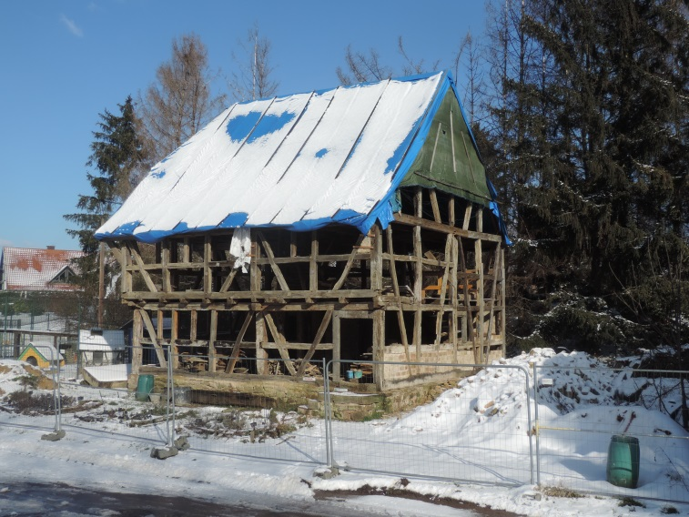

Casa de Buschwiller
La asociación reconstruye su entramado y cubierta y conserva materiales históricos.

Proyecto en curso
Ayude a devolver la vida a la casa de Buschwiller de 1554.
La asociación reconstruye su entramado y cubierta y conserva materiales históricos.
Las donaciones se realizan a través de la Fondation du patrimoine. El expediente está disponible abajo.
Voluntarios internacionales trabajarán en estructura, cubierta, revoque, pintura y objetos históricos.